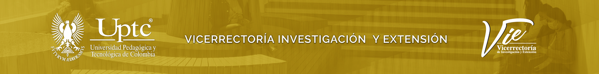

Estimación del grado de desarrollo de la tecnología
Determine el nivel TRL de su desarrollo respondiendo 73 preguntas y obtenga una ruta de maduración con las actividades que le faltan para llegar al TRL 9.
Niveles TRL
Perfil de la tecnología
Estos datos identifican el diagnóstico y aparecen en el informe final. Ningún dato sale de su navegador.

Resultados del diagnóstico
Progreso por nivel TRL
El TRL asignado es el nivel más alto cuyo porcentaje de respuestas «Sí» supera su umbral, evaluando de TRL 9 hacia TRL 1 (misma regla que la hoja RESULTADOS del libro original). La línea vertical de cada barra marca el umbral del nivel.
Progreso por categoría
Detalle de respuestas
Ruta de maduración hasta TRL 9
Recomendaciones derivadas del diagnóstico: qué falta, nivel por nivel, para superar cada umbral y llegar al TRL 9. Cada actividad corresponde a una pregunta respondida con No.
Glosario
Términos empleados en el cuestionario. En las preguntas aparecen subrayados; pase el cursor sobre ellos para ver la definición.